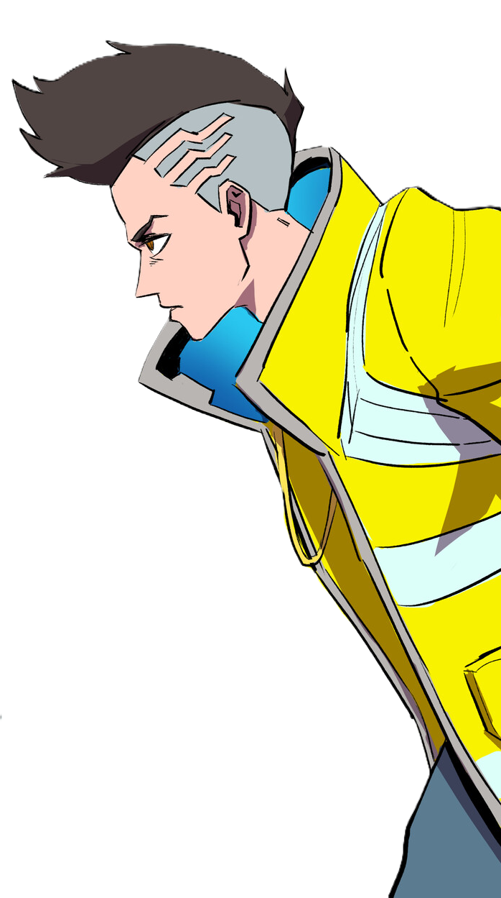

CyberPunk 2077 LE JEU

Cyberpunk: Edgerunners est une série animée produite par Studio Trigger
en collaboration avec CD Projekt RED. Elle se déroule dans le même
univers que le jeu Cyberpunk 2077, à Night City, mais suit une histoire
indépendante centrée sur David Martinez, un jeune homme pris dans la
spirale infernale du monde cybernétique. L'anime explore les thèmes du
transhumanisme, de la marginalisation, et du sacrifice à travers une
narration poignante et un style visuel percutant. Grâce à son rythme
intense, ses personnages attachants et sa bande-son immersive,
Edgerunners offre une plongée émotionnelle dans l'univers cyberpunk,
complémentaire à celle du jeu. L'anime m'a offert une perspective
émotionnelle et narrative différente, avec des personnages marquants et
une histoire poignante qui résonne avec les thèmes du jeu. Ce qui est
fou c'est que le jeu m'a permis de vivre Night City de l'intérieur, en
incarnant V, en explorant ses rues, ses recoins sombres et ses néons
hypnotiques.